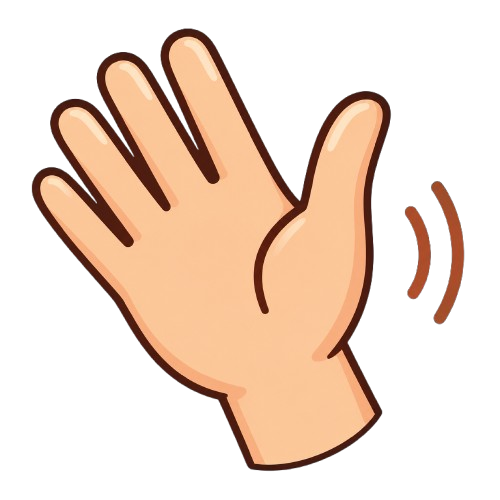
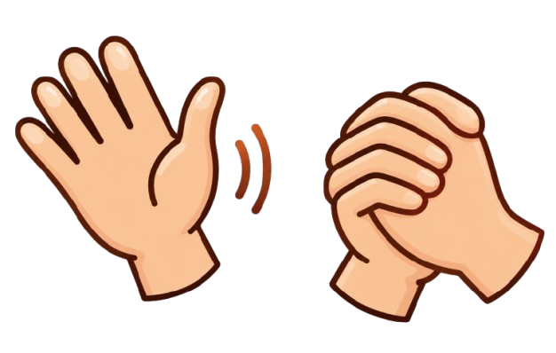

Mulai belajar bahasa isyarat dari dasar dengan menyenangkan!


Bahasa Isyarat Indonesia (BISINDO) adalah sistem komunikasi visual yang digunakan komunitas Tuli di Indonesia melalui gerakan tangan, ekspresi wajah, dan posisi tubuh.
Bersama Kita Berkomunikasi